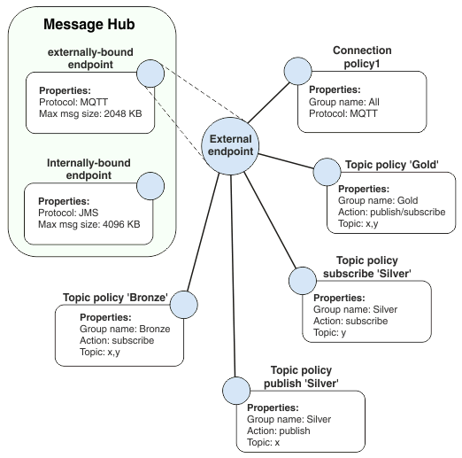

Message hubs, endpoints, and policies
Message hubs are an organizational configuration object that collects endpoints, connection policies, and messaging policies that are associated with a specific goal into a single place. You can create a message hub per application to organize the endpoints and policies each application uses.
Endpoints accept network requests, so clients can connect to the message hub through MQTT, or JMS. You must have a minimum of one endpoint per message hub. You can create one endpoint for each port the message hub listens on.
- Connection policies
A connection policy filters any connection that is based on a rule. For example, a connection policy might be set up to authorize users that are defined within a particular group or groups to connect from a specific location or range of locations.
- Topic policies
Topic policies are used to control which clients can publish or subscribe to a specified topic.
- Subscription policies
Subscription policies are used to control which clients can receive messages from a specified global-shared durable subscription. Subscription policies are also used to control which clients can control the creation and deletion of global-shared durable subscriptions on a specified subscription name.
- Queue policies
Queue policies are used to control which clients can send to, receive from, or browse a specified queue.
Endpoints must have one or more connection policies that are applied to them to accept client connections. Topic policies, queue policies, and subscription policies are all types of messaging policy. Endpoints must have at least one type of messaging policy applied to them.
Endpoints can be used only within the specified message hub. Different message hubs cannot specify endpoints on the same IP address and ports. Different message hubs can have endpoints with different IP addresses and the same port. This architecture means that endpoints can be monitored to provide a complete picture of traffic and activity across the message hub. For example, endpoints can be used to track connections, and monitor metrics such as the range of IP addresses used to connect to the message hub, the number of incoming messages, and the number of subscriptions that are associated with a particular message hub.
The diagram shows a message hub with two endpoints. One endpoint is internally bound. One endpoint is externally bound. The externally bound endpoint has one connection policy, and four topic policies that are associated with it.

The externally bound endpoint in this scenario is configured to authorize external users to connect to Eclipse Amlen over MQTT, and has the maximum message size that can be published set to 2048 KB.
The internally bound endpoint in this scenario is configured to authorize internal users to connect to Eclipse Amlen over JMS, and has the maximum message size that can be published set to 4096 KB.
The Connection Policy allows all groups to connect over MQTT.
The topic policies in this scenario allow users in the user group "Gold" to publish and subscribe to topic x and topic y. Users in the "Silver" group can publish and subscribe to topic x. Users in the "Bronze" group can subscribe to topic x.
- Create a message hub
- Create at least one connection policy and at least one type of messaging policy.
- Create endpoints within that message hub, associating the connection policy and the messaging policy type that you configured with the endpoints.
For more information about how to administer these actions, see Configuring message hubs.